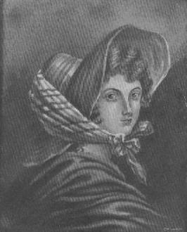

Emily Bronte sinh năm 1818, con một vị mục sư nghèo và nghiêm khắc người Ái Nhĩ Lan, mẹ là người Anh. Nữ sĩ là người thứ tư trong số sáu chị em, năm gái một trai, trong đó chị là Charlotte và em gái là Anne đều là văn sĩ danh tiếng. Gia đình ở Thornton, một làng xa xôi khuất nẻo thuộc tỉnh Yorkshire, Anh quốc. Mấy chị em sinh trưởng ở đấy như những cô gái cấm cung ít được tiếp xúc với đời.
Emily Bronte rất ít có cơ hội đi học, và tuy sự học chẳng đi đến đâu, cô cũng có thời gian đi dậy học tại Halifax năm lên 18 tuổi. Nhưng sáu tháng sau cô trở về vì cảm thấy nghề làm cô giáo vất vả quá. Không kể một vài lần đi thăm viếng những thành phố lân cận, Emily suốt đời quanh quẩn ở nhà, kéo dài những ngày tháng nghèo nàn bệnh hoạn giữa khung cảnh thê lương của miền hoang dã. Năm ba mươi tuổi, nữ sĩ chết vì bệnh lao sau khi đã tận tụy làm việc để cứu giúp người em trai nghiện rượu và thuốc phiện. Để đền bù lại, người em trai này đã chết trước Emily ba tháng.
Thoạt tiên ba chị em chung nhau xuất bản một tập thơ nhưng không thành công, và xoay sang viết tiểu thuyết. Charlotte viết cuốn Jane Eyre (Kiều Giang) và được hoan nghênh ngay. Emily viết cuốn Wuthering Heights tức Đỉnh Gió Hú này dưới bút hiệu là Ellis Bell và xuất bản vào cuối năm 1847, một năm trước khi nữ sĩ qua đời tại Haworth vào ngày 19 tháng chạp năm 1848.
Mới đầu ít người biết thưởng thức tác phẩm này. Đối với thời cổ xưa ấy người ta cho là thô lỗ, tục tằn. Nhưng rồi càng ngày người ta càng nhận thấy chân giá trị của nó và hoan nghênh nhiệt liệt. Chua chát thay, Emily đã không còn sống để biết mình nổi tiếng.
Nhà văn W. Somerset Maugham đã chọn Đỉnh Gió Hú là một trong mười cuốn tiểu thuyết ông cho là hay nhất thế giới.
Ông viết: “Đỉnh Gió Hú không phải là một cuốn sách để chúng ta đàm luận, nó là một cuốn sách để chúng ta đọc... Nó chứa đựng một thứ mà rất ít tiểu thuyết gia có thể cho chúng ta, ấy là Năng lực. Tôi chưa thấy một cuốn tiểu thuyết nào mà nỗi buồn rầu thống khổ, niềm vui sướng điên cuồng, tính độc ác vô tình, sự ám ảnh của ái tình được diễn tả một cách kỳ diệu như trong Đỉnh Gió Hú.”